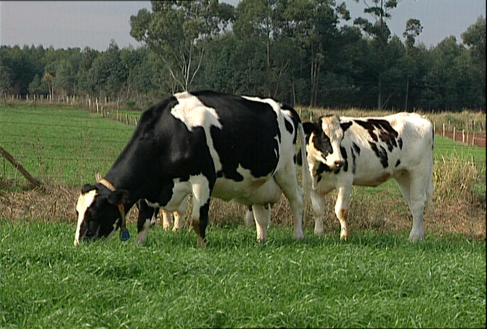
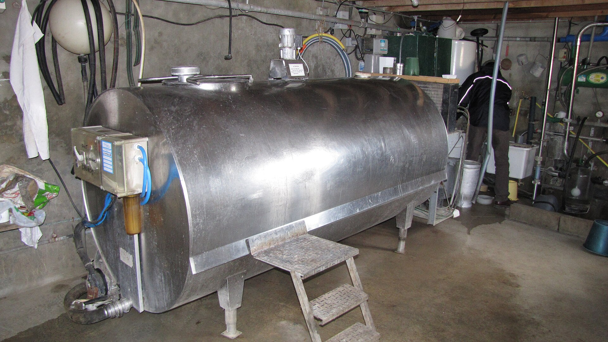
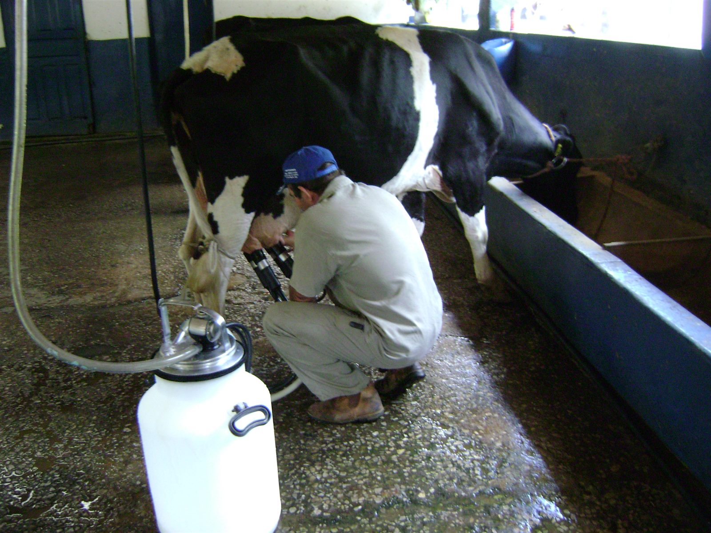

Margens e indicadores
Sobrou, mas sobrou de verdade?
"Deu lucro" é a frase mais ambígua da gestão rural. Sobrou depois de pagar o quê? O boleto? O desgaste? O próprio salário? A alternativa de nem ter plantado?
Cada resposta é uma margem diferente, e a ordem de leitura importa, porque uma margem positiva no topo pode esconder um prejuízo embaixo.
Nada disso é novo
Três subtrações contra a mesma receita líquida: três margens, três horizontes de decisão.
Convenção do curso (e do simulador): as margens são calculadas sobre a receita líquida, porque os encargos da venda já saíram no passo 1, não entram de novo no COE.
As três margens
MB: o ano fechou no caixa?
A margem bruta diz se a receita cobriu os desembolsos do ciclo, nada mais.
- MB negativa: cada unidade produzida piora o caixa; parar ou reformular não pode esperar.
- MB positiva: o ciclo se paga no curto prazo. É a condição para continuar a safra em andamento, mas não garante mais do que isso.
ML: a propriedade se mantém de pé?
A margem líquida desconta também a depreciação e o pró-labore: os dois custos invisíveis da T4.
- ML positiva: a atividade paga as contas, repõe o patrimônio e remunera o gestor; sustentável no médio prazo.
- ML negativa: a atividade funciona consumindo patrimônio e trabalho não pago; descapitalização lenta.
Descapitalização não aparece no extrato, aparece na cerca que não se refaz, na máquina que não se substitui, no filho que vai embora porque o trabalho não paga.
LE: valeu a pena ter produzido?
O lucro econômico desconta o custo completo, inclusive o que a terra e o capital renderiam na melhor alternativa (arrendar, aplicar).
- LE positivo: o projeto gera riqueza acima de qualquer alternativa; viabilidade plena.
- LE = 0: não é fracasso. Terra, capital e gestor foram remunerados exatamente como na melhor alternativa.
- LE negativo: o produtor ganharia mais arrendando e aplicando. A atividade pode continuar de pé, mas está deixando riqueza na mesa.
Lê-se de cima para baixo
| Resultado | Diagnóstico | Decisão típica |
|---|---|---|
| MB < 0 | Insustentável até no caixa | Parar ou reformular já |
| MB > 0, ML < 0 | Vive de consumir patrimônio | Reestruturar antes que o patrimônio acabe |
| ML > 0, LE < 0 | Sustentável, mas rende menos que a alternativa | Melhorar eficiência ou repensar a atividade |
| LE > 0 | Gera riqueza acima das alternativas | Manter, expandir, investir |
A leitura que separa o gestor do operador: MB positiva diz que o ano fechou no caixa; só o LE diz se valeu a pena ter plantado em vez de arrendar.
Quatro propriedades, quatro diagnósticos
| Propriedade | MB | ML | LE | Diagnóstico |
|---|---|---|---|---|
| A | +40 | +12 | −8 | |
| B | −5 | −30 | −50 | |
| C | +60 | +35 | +10 | |
| D | +25 | −6 | −30 |
Valores em R$ mil por ano. Leia de cima para baixo: a primeira margem negativa define o diagnóstico.
A primeira margem negativa decide
| Propriedade | MB | ML | LE | Diagnóstico |
|---|---|---|---|---|
| A | +40 | +12 | −8 | Sustentável, mas rende menos que arrendar e aplicar |
| B | −5 | −30 | −50 | Não paga nem o caixa: parar ou reformular já |
| C | +60 | +35 | +10 | Gera riqueza acima das alternativas |
| D | +25 | −6 | −30 | Paga o caixa consumindo patrimônio |
D é a mais perigosa: o caixa sobra todo ano e o problema só aparece quando a máquina precisa ser trocada.
Cada margem tem seu horizonte
- Curto prazo (a safra): decide-se pela MB: com os fixos já pagos ou inevitáveis, produzir vale enquanto a receita cobrir o desembolso do ciclo.
- Médio prazo (2–5 anos): decide-se pela ML: nenhuma atividade sobrevive anos repondo nada e pagando ninguém.
- Longo prazo (a vida do projeto): decide-se pelo LE: capital e terra sempre têm alternativa; ignorá-la é escolher ficar mais pobre devagar.
É por isso que uma atividade pode ser racional de manter nesta safra e irracional de manter por dez anos.
Lucratividade e rentabilidade
Margens são valores absolutos: R$ 30.000 é muito ou pouco? Depende da escala. Os indicadores tornam o projeto comparável.
Convenção do curso: rentabilidade sempre sobre o CT: a única base que compara o projeto com a alternativa de arrendar e aplicar.
IEE e os pontos de nivelamento
Comparados com a média regional e o preço de mercado, os nivelamentos dizem quanta folga o projeto tem antes da safra acontecer.
Com o que comparar
| Indicador | Referência | Contra o quê |
|---|---|---|
| Lucratividade | > 15–20% | projetos da mesma atividade |
| Rentabilidade | > Selic | a aplicação financeira sem risco |
| IEE | > 1,0 | o equilíbrio econômico |
| Produção de nivelamento | << média regional | CONAB, EMATER/RS, IRGA |
| Preço de nivelamento | << preço de mercado | CEPEA, cooperativa |
Rentabilidade menor que a Selic, com risco de seca e de preço? O número levanta a pergunta, mas não responde sozinho: contexto e projeto de vida também decidem.
A margem também é um mapa
Se a receita varia por zona (T2) e o custo varia por zona (T3), então a margem varia por zona, e a média da lavoura esconde os extremos.
- Zonas de alta produtividade: MB por hectare muito acima da média.
- Zonas degradadas: podem ter MB negativa dentro de uma lavoura lucrativa, hectares que destroem valor todo ano.
O mapa de margem é o argumento econômico da AP: ele aponta onde investir em correção, e onde talvez nem valha a pena plantar.

A propriedade leiteira que "vai bem"
Propriedade familiar da região de Santa Maria, o retrato típico dos painéis Campo Futuro/CNA da pecuária de leite:
- 30 vacas em lactação, 20 L/vaca/dia, 600 L/dia, ~219.000 L/ano.
- Mão de obra 100% familiar; terra própria; equipamentos quitados.
- O produtor diz: "o leite paga as contas do mês, vamos bem".
Valores por litro no padrão Campo Futuro, como referência didática. Consulte o painel mais recente da região e o preço EMATER/RS do dia para números atuais.

A pilha, por litro de leite
| Camada | R$/litro | O que contém |
|---|---|---|
| RB | 2,50 | preço pago pelo laticínio |
| RL | 2,40 | menos Funrural e frete |
| COE | 2,05 | ração, sanidade, energia, ordenha, manutenção |
| COT | 2,45 | + depreciação (ordenha, resfriador, matrizes) e pró-labore |
| CT | 2,75 | + oportunidade da terra (arrendamento) e do capital |

Por litro e por ano
| Margem | Conta | R$/litro | R$/ano |
|---|---|---|---|
| MB | 2,40 − 2,05 | ||
| ML | 2,40 − 2,45 | ||
| LE | 2,40 − 2,75 |
Para o ano, multiplique a margem por litro pelos 219.000 litros.
Três margens, três verdades
O produtor tem razão: sobram R$ 76 mil no caixa. E os painéis também: cada litro consome 5 centavos de patrimônio e deixa de ganhar 35 centavos frente a arrendar e aplicar.
Por que ninguém percebe?
Porque a MB positiva paga o mercado, a luz e o combustível, a sensação de normalidade é real. O prejuízo está nos itens sem boleto:
- O resfriador que envelhece sem fundo de reposição.
- As diárias de 365 dias por ano que a família nunca recebeu.
- O arrendamento que a terra renderia sem nenhuma ordenha às 5h da manhã.
É o retrato de parte relevante da pecuária leiteira gaúcha nos painéis Campo Futuro, e uma das razões estruturais do abandono da atividade e da sucessão interrompida.

O leite pelos indicadores
| Indicador | Conta | Resultado |
|---|---|---|
| Lucratividade | LE ÷ RB | |
| Rentabilidade | LE ÷ CT | |
| IEE | RB ÷ CT | |
| Produção de nivelamento | 600 L/dia × COE ÷ preço |
O preço de nivelamento já está nos dados: é o próprio COE por litro, R$ 2,05.
Folga no caixa, falta no custo total
Preço e produção podem cair 18% antes de o caixa fechar no vermelho. Mas cada real de custo total traz só 91 centavos de receita.
O diagnóstico aponta as alavancas
- Diluir o fixo: mais litros por vaca, menos depreciação e pró-labore por litro.
- Rever o COE: ração é o maior item; volumoso de qualidade feito em casa compete com concentrado comprado.
- Comparar de frente: se nem com eficiência o LE fica positivo, o arrendamento precisa ir para a mesa da família.
E se cada vaca der 24 litros?
As mesmas 30 vacas, 20% mais leite. Os fixos do ano não mudam: R$ 87.600 de depreciação e pró-labore, R$ 65.700 de oportunidade. O COE segue em R$ 2,05 por litro.
| R$ por litro | 20 L/vaca | 24 L/vaca |
|---|---|---|
| Produção anual | 219.000 L | 262.800 L |
| Fixos ÷ produção | 0,40 | |
| Oportunidade ÷ produção | 0,30 | |
| ML = RL − COT | −0,05 | |
| LE = RL − CT | −0,35 |
A produtividade vira a ML, não o LE
| R$ por litro | 20 L/vaca | 24 L/vaca |
|---|---|---|
| Produção anual | 219.000 L | 262.800 L |
| Fixos ÷ produção | 0,40 | 0,33 |
| Oportunidade ÷ produção | 0,30 | 0,25 |
| ML = RL − COT | −0,05 | +0,02 |
| LE = RL − CT | −0,35 | −0,23 |
Quatro litros a mais por vaca param a descapitalização: a ML passa a +R$ 4.380/ano. O LE melhora, mas segue em −R$ 61.320/ano. A pergunta do arrendamento continua na mesa.
Três lições do caso
- "Paga as contas" ≠ viável: MB positiva com LE negativo é a combinação mais comum e mais perigosa da agropecuária familiar.
- O prejuízo está nos invisíveis: depreciação, pró-labore e oportunidade: exatamente os custos que a T4 exigiu lançar.
- A margem depende da pergunta: continuar a safra? MB. Continuar na atividade? ML. Continuar investido? LE.
Tarefa de saída: parte 1
O simulador calcula tudo sozinho a partir dos passos 1–4. A tarefa não é digitar, é ler.
Tarefa de saída: parte 2
No campo de observações do passo 6, cada grupo escreve um parágrafo por margem do próprio projeto:
- O valor, o sinal e o que ele significa neste projeto.
- A decisão que a margem sustenta: continuar, reestruturar, comparar com arrendar.
- Uma comparação externa: rentabilidade × Selic, nivelamento × média regional.
Checklist de saída
- Passo 6 aberto e conferido: MB, ML e LE do projeto anotados
- Indicadores lidos: lucratividade, rentabilidade, IEE, nivelamentos
- Interpretação escrita das três margens no campo de observações
- Uma comparação externa registrada (Selic, média regional ou preço de mercado)
Terminou antes? Mude o preço do passo 1 em −10% e veja o que acontece com as margens.
T6: Equilíbrio, análise marginal e cenários
As margens são uma fotografia. A T6 examina o que acontece quando o quadro se move: quanto a produção pode cair antes do prejuízo? A próxima dose de adubo se paga? E se o preço despencar?
- Revisar no site: Parte III, bloco 1 completo (margens e indicadores) + autoavaliação.
- Trazer para a T6: as três margens do projeto anotadas; elas serão o cenário-base.
Fontes e créditos
Referência bibliográfica geral: KAY, Ronald D.; EDWARDS, William M.; DUFFY, Patricia A. Gestão de propriedades rurais. 7. ed. Porto Alegre: AMGH, 2014. E-book. ISBN 9788580553963. Disponível em: Minha Biblioteca. Acesso em: 29 maio 2026. Dados, preços e taxas citados nos exemplos: fontes indicadas em aula e atualizadas a cada oferta.
Material didático elaborado pelo Prof. Róberson Macedo de Oliveira, Colégio Politécnico da UFSM, com apoio de inteligência artificial (Claude, Anthropic) na organização didática e diagramação. O conteúdo pedagógico, a metodologia e as decisões de planejamento são de responsabilidade do docente.
Material de estudo: Parte III.1: Receita, margens e indicadores · autoavaliação da Parte III · calculadora do rebanho · simulador de projetos · versão impressa deste material = apostila da aula (Ctrl+P).